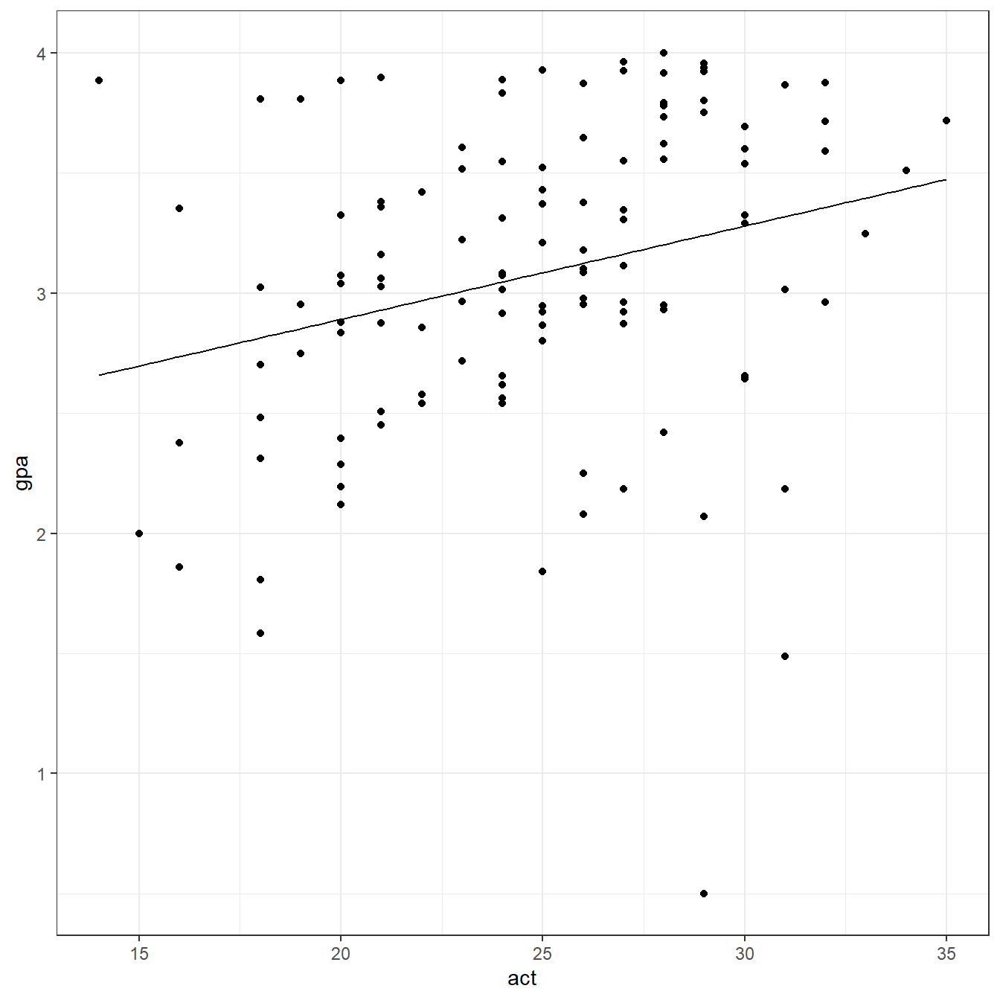

Chapter 2 Simulation code to demonstrate if the above procedure works as expected
gr <- vector(‘list’,100000)
for(i in 1:100000){ a <- data.frame(cbind(1:16,runif(16,0,1))) a <- a[order(a[,2]),] a$gr <- c(1,1,1,1,2,2,2,2,3,3,3,3,4,4,4,4) gr[[i]] = a }
assg <- c()
k <- 4
for(i in 1:100000){ assg[i] <- gr[[i]][which(gr[[i]][,1]==k),3] }
table(assg)
### 1.15
```r
set.seed(1234)
a <- data.frame(cbind(1:20,runif(20,0,1)))
a <- a[order(a[,2]),]
a$gr <- c(1,1,1,1,2,2,2,2,3,3,3,3,4,4,4,4,5,5,5,5)
a X1 X2 gr
7 7 0.009496 1
1 1 0.113703 1
19 19 0.186723 1
20 20 0.232226 1
8 8 0.232551 2
18 18 0.266821 2
13 13 0.282734 2
17 17 0.286223 2
15 15 0.292316 3
10 10 0.514251 3
12 12 0.544975 3
3 3 0.609275 3
2 2 0.622299 4
4 4 0.623379 4
6 6 0.640311 4
9 9 0.666084 4
11 11 0.693591 5
16 16 0.837296 5
5 5 0.860915 5
14 14 0.923433 52.0.1 1.16
No. Least squres method doesn’t care about the distribution of Y. It is still BLUE. No assumption is needed until one decides to make an inference
2.0.2 1.17
yes. why not?
2.0.3 1.18
It is not necessary that the errors will sum to zero at the population. Even the average error in population is different than zero, the residuals from a regression at the sample level can be equal to zero. See below.
set.seed(1234)
# Population
b0 <- 200
b1 <- 5
sigma <- 5
x <- rnorm(10000,0,1)
err <- rnorm(10000,50,5)
y <- b0+b1+err
# A random sample with size 200
s <- sample(1:10000,200)
s.x <- x[s]
s.y <- y[s]
fit <- lm(s.y ~ s.x)
summary(fit)
Call:
lm(formula = s.y ~ s.x)
Residuals:
Min 1Q Median 3Q Max
-17.404 -2.695 0.236 3.044 13.149
Coefficients:
Estimate Std. Error t value Pr(>|t|)
(Intercept) 254.808 0.346 735.87 <0.0000000000000002 ***
s.x 0.299 0.350 0.85 0.39
---
Signif. codes: 0 '***' 0.001 '**' 0.01 '*' 0.05 '.' 0.1 ' ' 1
Residual standard error: 4.89 on 198 degrees of freedom
Multiple R-squared: 0.00366, Adjusted R-squared: -0.00137
F-statistic: 0.727 on 1 and 198 DF, p-value: 0.395[1] -0.000000000000000073382.0.4 1.19
require(here)
gpa <- read.table(here('data/CH01PR19.txt'),
header=FALSE,
col.names = c('gpa','act'))
str(gpa)'data.frame': 120 obs. of 2 variables:
$ gpa: num 3.9 3.88 3.78 2.54 3.03 ...
$ act: int 21 14 28 22 21 31 32 27 29 26 ... gpa act
1 3.897 21
2 3.885 14
3 3.778 28
4 2.540 22
5 3.028 21
6 3.865 31(Intercept) act
2.11405 0.03883
Call:
lm(formula = gpa ~ act, data = gpa)
Residuals:
Min 1Q Median 3Q Max
-2.7400 -0.3383 0.0406 0.4406 1.2274
Coefficients:
Estimate Std. Error t value Pr(>|t|)
(Intercept) 2.1140 0.3209 6.59 0.0000000013 ***
act 0.0388 0.0128 3.04 0.0029 **
---
Signif. codes: 0 '***' 0.001 '**' 0.01 '*' 0.05 '.' 0.1 ' ' 1
Residual standard error: 0.623 on 118 degrees of freedom
Multiple R-squared: 0.0726, Adjusted R-squared: 0.0648
F-statistic: 9.24 on 1 and 118 DF, p-value: 0.00292require(ggplot2)
ggplot(data = gpa, aes(x=act,y=gpa))+
geom_point()+
geom_function(fun = function(x) coef(fit)[1] + coef(fit)[2]*x)+
theme_bw()
1 2 3 4 5 6 7 8 9 10 11 12 13
2.929 2.658 3.201 2.968 2.929 3.318 3.357 3.162 3.240 3.124 3.046 3.279 3.046
14 15 16 17 18 19 20 21 22 23 24 25 26
3.046 3.395 3.162 3.085 3.318 3.085 2.891 3.046 2.929 3.201 3.162 3.201 3.124
27 28 29 30 31 32 33 34 35 36 37 38 39
3.201 2.968 3.124 2.929 3.085 2.735 3.201 3.124 2.968 3.046 2.929 3.279 3.162
40 41 42 43 44 45 46 47 48 49 50 51 52
3.124 3.124 3.279 3.046 3.124 3.240 3.046 3.318 2.696 2.852 2.813 3.162 2.735
53 54 55 56 57 58 59 60 61 62 63 64 65
3.162 3.124 3.046 3.279 2.929 2.891 3.279 3.240 3.085 3.007 3.085 3.007 3.279
66 67 68 69 70 71 72 73 74 75 76 77 78
2.929 3.046 3.357 2.813 3.007 2.891 3.007 2.813 2.813 3.240 2.891 3.007 3.124
79 80 81 82 83 84 85 86 87 88 89 90 91
3.201 3.434 2.891 2.891 3.124 3.357 3.085 3.162 3.162 3.240 2.852 2.929 3.046
92 93 94 95 96 97 98 99 100 101 102 103 104
3.162 3.085 2.813 3.240 3.046 3.162 2.929 2.852 2.813 3.085 2.813 2.891 3.357
105 106 107 108 109 110 111 112 113 114 115 116 117
3.046 3.473 3.085 3.201 3.201 3.085 2.968 3.279 2.891 2.891 3.318 2.891 3.240
118 119 120
3.201 2.735 3.201 1 2 3 4 5 6 7 8
0.96758 1.22737 0.57679 -0.42825 0.09858 0.54731 -0.39452 0.79862
9 10 11 12 13 14 15 16
-2.74004 0.05445 0.26410 0.25914 0.03710 -0.03290 -0.15034 -0.19938
17 18 19 20 21 22 23 24
0.43727 -0.30469 -0.13773 -0.77259 -0.48290 0.42758 0.52979 0.76262
25 26 27 28 29 30 31 32
0.35479 -0.02255 -0.78121 -0.38925 0.74745 0.13058 0.84227 -0.36028
33 34 35 36 37 38 39 40
-0.27221 0.25145 -0.11125 0.02610 0.45158 0.01114 0.38662 0.52245
41 42 43 44 45 46 47 48
-0.14555 -0.62486 -0.50590 -0.87355 -1.17104 -0.42890 -1.13469 -0.69646
49 50 51 52 53 54 55 56
0.10024 0.99306 -0.29138 0.61672 0.14262 -0.17155 0.50110 0.41214
57 58 59 60 61 62 63 64
0.23058 -0.69659 0.04414 0.69596 -0.16273 -0.29107 0.28527 0.59893
65 66 67 68 69 70 71 72
-0.63686 -0.47742 -0.39090 0.35748 -1.00694 0.50893 0.14841 -0.04107
73 74 75 76 77 78 79 80
-0.33094 -0.11294 0.67996 -0.05659 0.21493 -0.03955 0.79879 0.07683
81 82 83 84 85 86 87 88
0.43241 0.18141 -1.04455 0.51848 0.12327 -0.24238 0.18262 0.71596
89 90 91 92 93 94 95 96
0.95624 -0.42342 0.84010 -0.97938 0.34427 0.21106 0.50996 0.78710
97 98 99 100 101 102 103 104
-0.04938 -0.05442 -0.10476 -0.50194 -1.24373 -1.22994 -0.01159 0.23448
105 106 107 108 109 110 111 112
-0.13190 0.24300 -0.28473 0.41979 0.59079 -0.21773 0.45075 0.32114
113 114 115 116 117 118 119 120
-0.49659 -0.60459 -1.83169 0.99441 0.55996 0.71279 -0.87528 -0.25321 1
3.279 2.0.5 1.20
copier <- read.table(here('data/CH01PR20.txt'),
header=FALSE,
col.names = c('x','y'))
fit <- lm(y ~ x, data=copier)
coef(fit)(Intercept) x
0.25419 0.06368
Call:
lm(formula = y ~ x, data = copier)
Residuals:
Min 1Q Median 3Q Max
-0.9857 -0.3678 -0.0373 0.4033 1.6580
Coefficients:
Estimate Std. Error t value Pr(>|t|)
(Intercept) 0.25419 0.17841 1.42 0.16
x 0.06368 0.00205 31.12 <0.0000000000000002 ***
---
Signif. codes: 0 '***' 0.001 '**' 0.01 '*' 0.05 '.' 0.1 ' ' 1
Residual standard error: 0.58 on 43 degrees of freedom
Multiple R-squared: 0.957, Adjusted R-squared: 0.957
F-statistic: 969 on 1 and 43 DF, p-value: <0.0000000000000002ggplot(data = copier, aes(x=x,y=y))+
geom_point()+
geom_function(fun = function(x) coef(fit)[1] + coef(fit)[2]*x)+
theme_bw() 1 2 3 4 5 6 7 8 9 10
1.5279 4.0752 3.1836 2.8652 1.0184 8.9788 4.5847 5.9220 0.5089 2.2921
11 12 13 14 15 16 17 18 19 20
9.4246 10.1888 6.1767 2.5468 4.8394 6.6225 6.9409 8.5967 8.3420 3.8841
21 22 23 24 25 26 27 28 29 30
4.4573 6.6862 7.1957 4.9668 8.7878 7.3867 1.4005 4.9031 7.3230 6.3678
31 32 33 34 35 36 37 38 39 40
8.0872 5.9857 1.5279 2.0373 0.4452 3.8841 5.7310 8.6604 7.3867 1.9736
41 42 43 44 45
8.5967 2.4194 1.9736 4.1389 5.1578 1 2 3 4 5 6 7 8
0.47214 -0.07519 -0.18363 -0.86521 -0.01839 1.02118 0.41534 -0.92201
9 10 11 12 13 14 15 16
0.49107 -0.29206 -0.42460 -0.18880 -0.17675 0.45321 -0.83940 1.37747
17 18 19 20 21 22 23 24
0.05905 -0.59672 1.65802 0.11586 0.54270 0.31379 -0.19568 0.03324
25 26 27 28 29 30 31 32
0.21223 -0.38673 0.59951 0.09692 -0.32305 -0.36780 -0.08725 -0.98570
33 34 35 36 37 38 39 40
0.47214 -0.03733 0.55476 0.11586 -0.73096 0.33960 -0.38673 -0.97364
41 42 43 44 45
0.40328 -0.41943 0.02636 -0.13888 -0.15781 1
0.5726